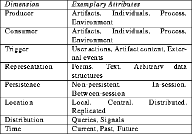

If a system is to effectively support answers to a question like ``Who should be informed about this change?'', it must potentially represent information about users, artifacts, types of changes, the context of collaboration, and communication mechanisms. To aid in understanding the various aspects of state management, we identified a useful set of characteristics, or dimensions of state management. The following table summarizes them:
